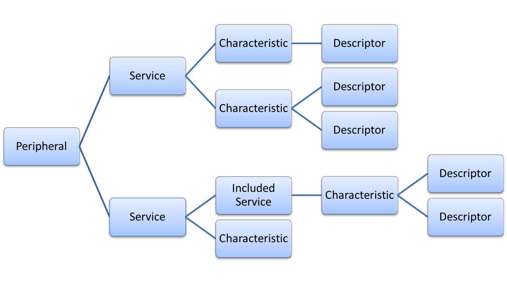

QLowEnergyService Class
The QLowEnergyService class represents an individual service on a Bluetooth Low Energy Device. More...
| Header: | #include <QLowEnergyService> |
| qmake: | QT += bluetooth |
| Inherits: | QObject |
Public Types
| enum | DiscoveryMode { FullDiscovery, SkipValueDiscovery } |
| enum | ServiceError { NoError, OperationError, CharacteristicReadError, CharacteristicWriteError, DescriptorReadError, …, UnknownError } |
| enum | ServiceState { InvalidService, RemoteService, RemoteServiceDiscovering, RemoteServiceDiscovered, LocalService, …, ServiceDiscovered } |
| enum | ServiceType { PrimaryService, IncludedService } |
| flags | ServiceTypes |
| enum | WriteMode { WriteWithResponse, WriteWithoutResponse, WriteSigned } |
Public Functions
| virtual | ~QLowEnergyService() |
| QLowEnergyCharacteristic | characteristic(const QBluetoothUuid &uuid) const |
| QList<QLowEnergyCharacteristic> | characteristics() const |
| bool | contains(const QLowEnergyCharacteristic &characteristic) const |
| bool | contains(const QLowEnergyDescriptor &descriptor) const |
| void | discoverDetails(DiscoveryMode mode = FullDiscovery) |
| ServiceError | error() const |
| QList<QBluetoothUuid> | includedServices() const |
| void | readCharacteristic(const QLowEnergyCharacteristic &characteristic) |
| void | readDescriptor(const QLowEnergyDescriptor &descriptor) |
| QString | serviceName() const |
| QBluetoothUuid | serviceUuid() const |
| QLowEnergyService::ServiceState | state() const |
| QLowEnergyService::ServiceTypes | type() const |
| void | writeCharacteristic(const QLowEnergyCharacteristic &characteristic, const QByteArray &newValue, WriteMode mode = WriteWithResponse) |
| void | writeDescriptor(const QLowEnergyDescriptor &descriptor, const QByteArray &newValue) |
Signals
| void | characteristicChanged(const QLowEnergyCharacteristic &characteristic, const QByteArray &newValue) |
| void | characteristicRead(const QLowEnergyCharacteristic &characteristic, const QByteArray &value) |
| void | characteristicWritten(const QLowEnergyCharacteristic &characteristic, const QByteArray &newValue) |
| void | descriptorRead(const QLowEnergyDescriptor &descriptor, const QByteArray &value) |
| void | descriptorWritten(const QLowEnergyDescriptor &descriptor, const QByteArray &newValue) |
| void | errorOccurred(QLowEnergyService::ServiceError newError) |
| void | stateChanged(QLowEnergyService::ServiceState newState) |
Detailed Description
QLowEnergyService provides access to the details of Bluetooth Low Energy services. The class facilitates the discovery and publification of service details, permits reading and writing of the contained data and notifies about data changes.
Service Structure
A Bluetooth Low Energy peripheral device can contain multiple services. In turn each service may include further services. This class represents a single service of the peripheral device and is created via QLowEnergyController::createServiceObject(). The type() indicates whether this service is a primary (top-level) service or whether the service is part of another service. Each service may contain one or more characteristics and each characteristic may contain descriptors. The resulting structure may look like the following diagram:

A characteristic is the principal information carrier. It has a value() and properties() describing the access permissions for the value. The general purpose of the contained descriptor is to further define the nature of the characteristic. For example, it might specify how the value is meant to be interpreted or whether it can notify the value consumer about value changes.
Service Interaction
Once a service object was created for the first time, its details are yet to be discovered. This is indicated by its current state() being DiscoveryRequired. It is only possible to retrieve the serviceUuid() and serviceName().
The discovery of its included services, characteristics and descriptors is triggered when calling discoverDetails(). During the discovery the state() transitions from DiscoveryRequired via DiscoveringService to its final ServiceDiscovered state. This transition is advertised via the stateChanged() signal. Once the details are known, all of the contained characteristics, descriptors and included services are known and can be read or written.
The values of characteristics and descriptors can be retrieved via QLowEnergyCharacteristic and QLowEnergyDescriptor, respectively. However, direct reading or writing of these attributes requires the service object. The readCharacteristic() function attempts to re-read the value of a characteristic. Although the initial service discovery may have obtained a value already this call may be required in cases where the characteristic value constantly changes without any notifications being provided. An example might be a time characteristic that provides a continuous value. If the read attempt is successful, the characteristicRead() signal is emitted. A failure to read the value triggers the CharacteristicReadError. The writeCharacteristic() function attempts to write a new value to the given characteristic. If the write attempt is successful, the characteristicWritten() signal is emitted. A failure to write triggers the CharacteristicWriteError. Reading and writing of descriptors follows the same pattern.
Every attempt is made to read or write the value of a descriptor or characteristic on the hardware. This means that meta information such as QLowEnergyCharacteristic::properties() is generally ignored when reading and writing. As an example, it is possible to call writeCharacteristic() despite the characteristic being read-only based on its meta data description. The resulting write request is forwarded to the connected device and it is up to the device to respond to the potentially invalid request. In this case the result is the emission of the CharacteristicWriteError in response to the returned device error. This behavior simplifies interaction with devices which report wrong meta information. If it was not possible to forward the request to the remote device the OperationError is set. A potential reason could be that the to-be-written characteristic object does not even belong the current service. In summary, the two types of errors permit a quick distinction of local and remote error cases.
All requests are serialised based on First-In First-Out principle. For example, issuing a second write request, before the previous write request has finished, is delayed until the first write request has finished.
Note: Currently, it is not possible to send signed write or reliable write requests.
In some cases the peripheral generates value updates which the central is interested in receiving. In order for a characteristic to support such notifications it must have the QLowEnergyCharacteristic::Notify or QLowEnergyCharacteristic::Indicate property and a descriptor of type QBluetoothUuid::DescriptorType::ClientCharacteristicConfiguration. Provided those conditions are fulfilled notifications can be enabled as shown in the following code segment:
//PreCondition: service details already discovered
QLowEnergyCharacteristic batteryLevel = service->characteristic(
QBluetoothUuid::CharacteristicType::BatteryLevel);
if (!batteryLevel.isValid())
return;
QLowEnergyDescriptor notification = batteryLevel.descriptor(
QBluetoothUuid::DescriptorType::ClientCharacteristicConfiguration);
if (!notification.isValid())
return;
// establish hook into notifications
connect(service, SIGNAL(characteristicChanged(QLowEnergyCharacteristic,QByteArray)),
this, SLOT(characteristicChanged(QLowEnergyCharacteristic,QByteArray)));
// enable notification
service->writeDescriptor(notification, QByteArray::fromHex("0100"));
// disable notification
//service->writeDescriptor(notification, QByteArray::fromHex("0000"));
// wait until descriptorWritten() signal is emitted
// to confirm successful write
The example shows a battery level characteristic which updates the central on every value change. The notifications are provided via the characteristicChanged() signal. More details about this mechanism are provided by the Bluetooth Specification.
Service Data Sharing
Each QLowEnergyService instance shares its internal states and information with other QLowEnergyService instance of the same service. If one instance initiates the discovery of the service details, all remaining instances automatically follow. Therefore the following snippet always works:
QLowEnergyService *first, *second;
QLowEnergyController control(remoteDevice);
control.connectToDevice();
// waiting for connection
first = control.createServiceObject(QBluetoothUuid::ServiceClassUuid::BatteryService);
second = control.createServiceObject(QBluetoothUuid::ServiceClassUuid::BatteryService);
Q_ASSERT(first->state() == QLowEnergyService::RemoteService);
Q_ASSERT(first->state() == second->state());
first->discoverDetails();
Q_ASSERT(first->state() == QLowEnergyService::RemoteServiceDiscovering);
Q_ASSERT(first->state() == second->state());
Other operations such as calls to readCharacteristic(), readDescriptor(), writeCharacteristic(), writeDescriptor() or the invalidation of the service due to the related QLowEnergyController disconnecting from the device are shared the same way.
See also QLowEnergyController, QLowEnergyCharacteristic, and QLowEnergyDescriptor.
Member Type Documentation
[since 6.2] enum QLowEnergyService::DiscoveryMode
This enum lists service discovery modes. All modes discover the characteristics of the service and the descriptors of the characteristics. The modes differ in whether characteristic values and descriptors are read.
| Constant | Value | Description |
|---|---|---|
QLowEnergyService::FullDiscovery | 0 | During a full discovery, all characteristics are discovered. All characteristic values and descriptors are read. |
QLowEnergyService::SkipValueDiscovery | 1 | During a minimal discovery, all characteristics are discovered. Characteristic values and descriptors are not read. |
This enum was introduced in Qt 6.2.
See also discoverDetails().
enum QLowEnergyService::ServiceError
This enum describes all possible error conditions during the service's existence. The error() function returns the last occurred error.
| Constant | Value | Description |
|---|---|---|
QLowEnergyService::NoError | 0 | No error has occurred. |
QLowEnergyService::OperationError | 1 | An operation was attempted while the service was not ready. An example might be the attempt to write to the service while it was not yet in the ServiceDiscovered state() or the service is invalid due to a loss of connection to the peripheral device. |
QLowEnergyService::CharacteristicReadError (since Qt 5.5) | 5 | An attempt to read a characteristic value failed. For example, it might be triggered in response to a call to readCharacteristic(). |
QLowEnergyService::CharacteristicWriteError | 2 | An attempt to write a new value to a characteristic failed. For example, it might be triggered when attempting to write to a read-only characteristic. |
QLowEnergyService::DescriptorReadError (since Qt 5.5) | 6 | An attempt to read a descriptor value failed. For example, it might be triggered in response to a call to readDescriptor(). |
QLowEnergyService::DescriptorWriteError | 3 | An attempt to write a new value to a descriptor failed. For example, it might be triggered when attempting to write to a read-only descriptor. |
QLowEnergyService::UnknownError (since Qt 5.5) | 4 | An unknown error occurred when interacting with the service. |
enum QLowEnergyService::ServiceState
This enum describes the state() of the service object.
| Constant | Value | Description |
|---|---|---|
QLowEnergyService::InvalidService | 0 | A service can become invalid when it looses the connection to the underlying device. Even though the connection may be lost it retains its last information. An invalid service cannot become valid anymore even if the connection to the device is re-established. |
QLowEnergyService::RemoteService | 1 | The service details are yet to be discovered by calling discoverDetails(). The only reliable pieces of information are its serviceUuid() and serviceName(). |
QLowEnergyService::RemoteServiceDiscovering | 2 | The service details are being discovered. |
QLowEnergyService::RemoteServiceDiscovered | 3 | The service details have been discovered. |
QLowEnergyService::LocalService (since Qt 5.7) | 4 | The service is associated with a controller object in the peripheral role. Such service objects do not change their state. |
QLowEnergyService::DiscoveryRequired | RemoteService | Deprecated. Was renamed to RemoteService. |
QLowEnergyService::DiscoveringService | RemoteServiceDiscovering | Deprecated. Was renamed to RemoteServiceDiscovering. |
QLowEnergyService::ServiceDiscovered | RemoteServiceDiscovered | Deprecated. Was renamed to RemoteServiceDiscovered. |
enum QLowEnergyService::ServiceType
flags QLowEnergyService::ServiceTypes
This enum describes the type of the service.
| Constant | Value | Description |
|---|---|---|
QLowEnergyService::PrimaryService | 0x0001 | The service is a top-level/primary service. If this type flag is not set, the service is considered to be a secondary service. Each service may be included by another service which is indicated by IncludedService. |
QLowEnergyService::IncludedService | 0x0002 | The service is included by another service. On some platforms, this flag cannot be determined until the service that includes the current service was discovered. |
The ServiceTypes type is a typedef for QFlags<ServiceType>. It stores an OR combination of ServiceType values.
enum QLowEnergyService::WriteMode
This enum describes the mode to be used when writing a characteristic value. The characteristic advertises its supported write modes via its properties.
| Constant | Value | Description |
|---|---|---|
QLowEnergyService::WriteWithResponse | 0 | If a characteristic is written using this mode, the peripheral shall send a write confirmation. If the operation is successful, the confirmation is emitted via the characteristicWritten() signal. Otherwise the CharacteristicWriteError is emitted. A characteristic must have set the QLowEnergyCharacteristic::Write property to support this write mode. |
QLowEnergyService::WriteWithoutResponse | 1 | If a characteristic is written using this mode, the remote peripheral shall not send a write confirmation. The operation's success cannot be determined and the payload must not be longer than 20 bytes. A characteristic must have set the QLowEnergyCharacteristic::WriteNoResponse property to support this write mode. Its adavantage is a quicker write operation as it may happen in between other device interactions. |
QLowEnergyService::WriteSigned (since Qt 5.7) | 2 | If a characteristic is written using this mode, the remote peripheral shall not send a write confirmation. The operation's success cannot be determined and the payload must not be longer than 8 bytes. A bond must exist between the two devices and the link must not be encrypted. A characteristic must have set the QLowEnergyCharacteristic::WriteSigned property to support this write mode. This value is currently only supported on Android and on Linux with BlueZ 5 and a kernel version 3.7 or newer. |
Member Function Documentation
[virtual noexcept] QLowEnergyService::~QLowEnergyService()
Destroys the QLowEnergyService instance.
QLowEnergyCharacteristic QLowEnergyService::characteristic(const QBluetoothUuid &uuid) const
Returns the matching characteristic for uuid; otherwise an invalid characteristic.
The returned characteristic is invalid if this service instance's discoverDetails() was not yet called or there are no characteristics with a matching uuid.
See also characteristics().
[signal] void QLowEnergyService::characteristicChanged(const QLowEnergyCharacteristic &characteristic, const QByteArray &newValue)
If the associated controller object is in the central role, this signal is emitted when the value of characteristic is changed by an event on the peripheral/device side. In that case, the signal emission implies that change notifications must have been activated via the characteristic's ClientCharacteristicConfiguration descriptor prior to the change event on the peripheral. More details on how this might be done can be found further above.
If the controller is in the peripheral role, that is, the service object was created via QLowEnergyController::addService, the signal is emitted when a GATT client has written the value of the characteristic using a write request or command.
The newValue parameter contains the updated value of the characteristic.
[signal] void QLowEnergyService::characteristicRead(const QLowEnergyCharacteristic &characteristic, const QByteArray &value)
This signal is emitted when the read request for characteristic successfully returned its value. The signal might be triggered by calling characteristicRead(). If the read operation is not successful, the errorOccurred() signal is emitted using the CharacteristicReadError flag.
Note: This signal is only emitted for Central Role related use cases.
See also readCharacteristic().
[signal] void QLowEnergyService::characteristicWritten(const QLowEnergyCharacteristic &characteristic, const QByteArray &newValue)
This signal is emitted when the value of characteristic is successfully changed to newValue. The change must have been triggered by calling writeCharacteristic(). If the write operation is not successful, the errorOccurred() signal is emitted using the CharacteristicWriteError flag.
The reception of the written signal can be considered as a sign that the target device received the to-be-written value and reports back the status of write request.
Note: If writeCharacteristic() is called using the WriteWithoutResponse mode, this signal and the errorOccurred() are never emitted.
Note: This signal is only emitted for Central Role related use cases.
See also writeCharacteristic().
QList<QLowEnergyCharacteristic> QLowEnergyService::characteristics() const
Returns all characteristics associated with this QLowEnergyService instance.
The returned list is empty if this service instance's discoverDetails() was not yet called or there are no known characteristics.
See also characteristic(), state(), and discoverDetails().
bool QLowEnergyService::contains(const QLowEnergyCharacteristic &characteristic) const
Returns true if characteristic belongs to this service; otherwise false.
A characteristic belongs to a service if characteristics() contains the characteristic.
bool QLowEnergyService::contains(const QLowEnergyDescriptor &descriptor) const
Returns true if descriptor belongs to this service; otherwise false.
[signal] void QLowEnergyService::descriptorRead(const QLowEnergyDescriptor &descriptor, const QByteArray &value)
This signal is emitted when the read request for descriptor successfully returned its value. The signal might be triggered by calling descriptorRead(). If the read operation is not successful, the errorOccurred() signal is emitted using the DescriptorReadError flag.
Note: This signal is only emitted for Central Role related use cases.
See also readDescriptor().
[signal] void QLowEnergyService::descriptorWritten(const QLowEnergyDescriptor &descriptor, const QByteArray &newValue)
This signal is emitted when the value of descriptor is successfully changed to newValue. If the associated controller object is in the central role, the change must have been caused by calling writeDescriptor(). Otherwise, the signal is the result of a write request or command from a GATT client to the respective descriptor.
See also writeDescriptor().
void QLowEnergyService::discoverDetails(DiscoveryMode mode = FullDiscovery)
Initiates discovery of the service's included services, characteristics, and their associated descriptors.
The discovery process is indicated via the stateChanged() signal. After creation, the service is in DiscoveryRequired state. When calling discoverDetails() it transitions to DiscoveringService. After completion of detail discovery, it transitions to ServiceDiscovered state. On each transition, the stateChanged() signal is emitted. Depending on the argument mode, a FullDiscovery or a SkipValueDiscovery is performed. In any case, all services and characteristics are discovered. A FullDiscovery proceeds and reads all characteristic values and descriptors. A SkipValueDiscovery does not read characteristic values and descriptors. A SkipValueDiscovery has two advantages. First, it is faster. Second, it circumvents bugs in some devices which wrongly advertise characteristics or descriptors as readable but nevertheless do not permit reads on them. This can trigger unpredictable behavior. After a SkipValueDiscovery, it is necessary to call readCharacteristic() / readDescriptor() and wait for them to finish successfully before accessing the value of a characteristic or descriptor.
The argument mode was introduced in Qt 6.2.
See also state().
ServiceError QLowEnergyService::error() const
Returns the last occurred error or NoError.
[signal, since 6.2] void QLowEnergyService::errorOccurred(QLowEnergyService::ServiceError newError)
This signal is emitted when an error occurrs. The newError parameter describes the error that occurred.
This function was introduced in Qt 6.2.
QList<QBluetoothUuid> QLowEnergyService::includedServices() const
Returns the UUIDs of all services which are included by the current service.
The returned list is empty if this service instance's discoverDetails() was not yet called or there are no known characteristics.
It is possible that an included service contains yet another service. Such second level includes have to be obtained via their relevant first level QLowEnergyService instance. Technically, this could create a circular dependency.
QLowEnergyController::createServiceObject() should be used to obtain service instances for each of the UUIDs.
See also createServiceObject().
void QLowEnergyService::readCharacteristic(const QLowEnergyCharacteristic &characteristic)
Reads the value of characteristic. If the operation is successful, the characteristicRead() signal is emitted; otherwise the CharacteristicReadError is set. In general, a characteristic is readable, if its QLowEnergyCharacteristic::Read property is set.
All descriptor and characteristic requests towards the same remote device are serialised. A queue is employed when issuing multiple requests at the same time. The queue does not eliminate duplicated read requests for the same characteristic.
A characteristic can only be read if the service is in the ServiceDiscovered state and belongs to the service. If one of these conditions is not true the QLowEnergyService::OperationError is set.
Note: Calling this function despite QLowEnergyCharacteristic::properties() reporting a non-readable property always attempts to read the characteristic's value on the hardware. If the hardware returns with an error the CharacteristicReadError is set.
See also characteristicRead() and writeCharacteristic().
void QLowEnergyService::readDescriptor(const QLowEnergyDescriptor &descriptor)
Reads the value of descriptor. If the operation is successful, the descriptorRead() signal is emitted; otherwise the DescriptorReadError is set.
All descriptor and characteristic requests towards the same remote device are serialised. A queue is employed when issuing multiple requests at the same time. The queue does not eliminate duplicated read requests for the same descriptor.
A descriptor can only be read if the service is in the ServiceDiscovered state and the descriptor belongs to the service. If one of these conditions is not true the QLowEnergyService::OperationError is set.
See also descriptorRead() and writeDescriptor().
QString QLowEnergyService::serviceName() const
Returns the name of the service; otherwise an empty string.
The returned name can only be retrieved if serviceUuid() is a well-known UUID.
QBluetoothUuid QLowEnergyService::serviceUuid() const
Returns the UUID of the service; otherwise a null UUID.
QLowEnergyService::ServiceState QLowEnergyService::state() const
Returns the current state of the service.
If the device's service was instantiated for the first time, the object's state is DiscoveryRequired. The state of all service objects which point to the same service on the peripheral device are always equal. This is caused by the shared nature of the internal object data. Therefore any service object instance created after the first one has a state equal to already existing instances.
A service becomes invalid if the QLowEnergyController disconnects from the remote device. An invalid service retains its internal state at the time of the disconnect event. This implies that once the service details are discovered they can even be retrieved from an invalid service. This permits scenarios where the device connection is established, the service details are retrieved and the device immediately disconnected to permit the next device to connect to the peripheral device.
However, under normal circumstances the connection should remain to avoid repeated discovery of services and their details. The discovery may take a while and the client can subscribe to ongoing change notifications.
See also stateChanged().
[signal] void QLowEnergyService::stateChanged(QLowEnergyService::ServiceState newState)
This signal is emitted when the service's state changes. The newState can also be retrieved via state().
See also state().
QLowEnergyService::ServiceTypes QLowEnergyService::type() const
Returns the type of the service.
Note: The type attribute cannot be relied upon until the service has reached the ServiceDiscovered state. This field is initialised with PrimaryService.
Note: On Android, it is not possible to determine whether a service is a primary or secondary service. Therefore all services have the PrimaryService flag set.
void QLowEnergyService::writeCharacteristic(const QLowEnergyCharacteristic &characteristic, const QByteArray &newValue, WriteMode mode = WriteWithResponse)
Writes newValue as value for the characteristic. The exact semantics depend on the role that the associated controller object is in.
Central role
The call results in a write request or command to a remote peripheral. If the operation is successful, the characteristicWritten() signal is emitted; otherwise the CharacteristicWriteError is set. Calling this function does not trigger the a characteristicChanged() signal unless the peripheral itself changes the value again after the current write request.
The mode parameter determines whether the remote device should send a write confirmation. The to-be-written characteristic must support the relevant write mode. The characteristic's supported write modes are indicated by its QLowEnergyCharacteristic::Write and QLowEnergyCharacteristic::WriteNoResponse properties.
All descriptor and characteristic write requests towards the same remote device are serialised. A queue is employed when issuing multiple write requests at the same time. The queue does not eliminate duplicated write requests for the same characteristic. For example, if the same descriptor is set to the value A and immediately afterwards to B, the two write request are executed in the given order.
Note: Currently, it is not possible to use signed or reliable writes as defined by the Bluetooth specification.
A characteristic can only be written if this service is in the ServiceDiscovered state and belongs to the service. If one of these conditions is not true the QLowEnergyService::OperationError is set.
Note: Calling this function despite QLowEnergyCharacteristic::properties() reporting a non-writable property always attempts to write to the hardware. Similarly, a WriteWithoutResponse is sent to the hardware too although the characteristic may only support WriteWithResponse. If the hardware returns with an error the CharacteristicWriteError is set.
Peripheral role
The call results in the value of the characteristic getting updated in the local database.
If a client is currently connected and it has enabled notifications or indications for the characteristic, the respective information will be sent. If a device has enabled notifications or indications for the characteristic and that device is currently not connected, but a bond exists between it and the local device, then the notification or indication will be sent on the next reconnection.
If there is a constraint on the length of the characteristic value and newValue does not adhere to that constraint, the behavior is unspecified.
Note: The mode argument is ignored in peripheral mode.
See also QLowEnergyService::characteristicWritten() and QLowEnergyService::readCharacteristic().
void QLowEnergyService::writeDescriptor(const QLowEnergyDescriptor &descriptor, const QByteArray &newValue)
Writes newValue as value for descriptor. The exact semantics depend on the role that the associated controller object is in.
Central role
A call to this function results in a write request to the remote device. If the operation is successful, the descriptorWritten() signal is emitted; otherwise the DescriptorWriteError is emitted.
All descriptor and characteristic requests towards the same remote device are serialised. A queue is employed when issuing multiple write requests at the same time. The queue does not eliminate duplicated write requests for the same descriptor. For example, if the same descriptor is set to the value A and immediately afterwards to B, the two write request are executed in the given order.
A descriptor can only be written if this service is in the ServiceDiscovered state, belongs to the service. If one of these conditions is not true the QLowEnergyService::OperationError is set.
Peripheral Role
The value is written to the local service database. If the contents of newValue are not valid for descriptor, the behavior is unspecified.
See also descriptorWritten() and readDescriptor().